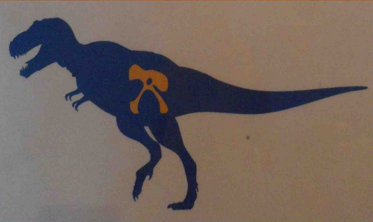
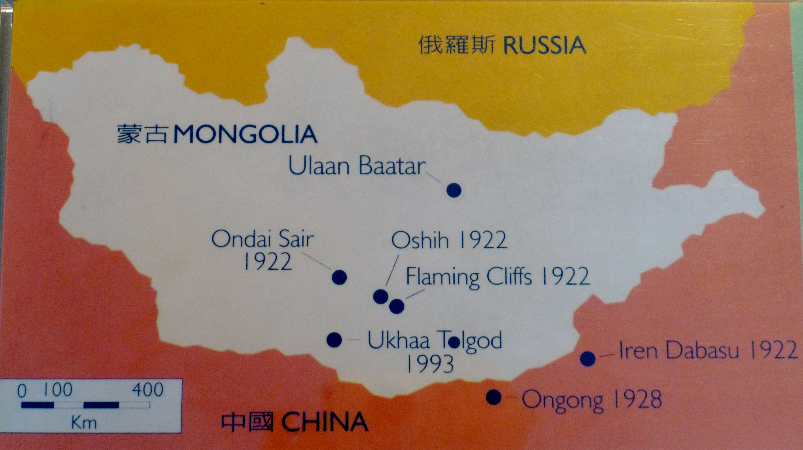

蒙古的恐龍
蒙古的恐龍


美國自然史博物館於20年代及90年代在蒙古進行恐龍發掘的地點
分布在蒙古戈壁沙漠的小暴龍和特暴龍，是暴龍家族在亞洲的代表，也是白堊紀晚期的肉食性恐龍。 特暴龍的體型比北美暴龍較小，全長約１２公尺左右。
自從1920年代至90年代，歐美各國科學家多次在戈壁進行發掘工作，結果十分豐碩。 此外，在戈壁發現的恐龍化石，大都屬於白堊紀晚期。

小暴龍骨架
特暴龍頭骨原件標本
發掘於蒙古晚白堊紀地層